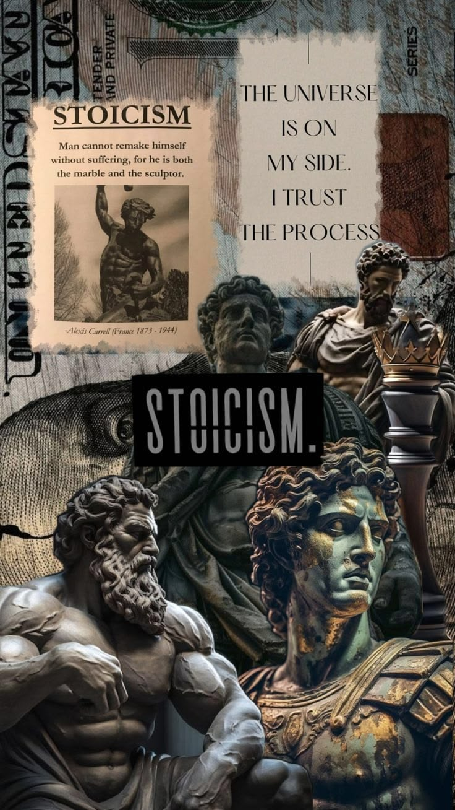
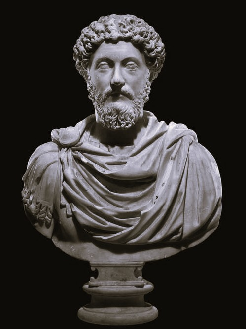

SVG RESOURCE
Stoic Concept Map
A visual overview of the Stoic framework: the four cardinal virtues, the dichotomy of control and the three disciplines of practice.
Open Full SizeStoicism began in Athens around 300 BCE as a school that treated the good life as a question of character. Its followers held that the universe is ordered by reason, or logos, that human beings share in that reason, and that the best use of it is to cultivate virtue and judge things as they really are. Over nearly five centuries, from a painted colonnade in Athens to the court of a Roman emperor, the school joined a theory of knowledge, an account of nature and a practical ethics of self-examination.[1]

Stoicism is a school of Hellenistic philosophy founded in ancient Greece that teaches that virtue is the highest good and that living in accordance with reason and nature is essential to human flourishing. It holds that our judgments, intentions, and actions shape our moral character, whereas external circumstances such as wealth, reputation, health, and social status do not, in themselves, determine our moral worth. By cultivating wisdom, courage, justice, and temperance, individuals can develop greater clarity, self-discipline, and resilience. Stoicism also distinguishes between what lies within our control, such as our judgments and choices, and what lies beyond it, encouraging us to focus on our own conduct rather than trying to control every outcome.[3][1]
Stoic philosophy is traditionally divided into three interconnected branches: physics, logic, and ethics. Physics examines the nature and structure of the universe, which the Stoics understood as an ordered whole governed by logos, or rational principle. Logic explores reasoning, knowledge, and the formation of judgments, while ethics examines how human beings should live and act. Together, these branches form a unified philosophical system in which understanding nature and reasoning correctly support the pursuit of virtue. The Stoic ideal is not simply to endure hardship or suppress emotions, but to develop sound judgment, act justly towards others, and live in accordance with reason.[1]
Also read: Explore more history History of philosophy traces how thinkers and philosophical traditions have explored questions about reality, knowledge, morality, and human existence across different periods and cultures. Read article →

Stoicism emerged in Athens in the early third century BCE through the teachings of Zeno of Citium and developed into one of the major philosophical schools of the Hellenistic world. Its doctrines were further developed and systematised by Cleanthes and Chrysippus, whose contributions helped establish its distinctive approaches to nature, reasoning, and ethics. The school later evolved through what scholars commonly call the Middle Stoa and gained considerable influence in Rome, where philosophers such as Seneca, Epictetus, and Marcus Aurelius explored Stoic principles and their application to everyday human life. Although Stoicism gradually ceased to exist as an organised philosophical school in late antiquity, its ideas continued to influence later philosophical and religious traditions and eventually attracted renewed interest in modern philosophy and practical ethics.[5][1]
The early development of Stoicism is commonly associated with the Old Stoa, which included Zeno of Citium, Cleanthes, and Chrysippus. Their work established the foundations of Stoic logic, physics, and ethics. Some scholars regard the transition to Middle Stoicism as a significant shift in the school's intellectual development, although the usefulness and accuracy of these historical labels remain debatedB. The term Middle Stoicism is nevertheless widely used to describe the work of Stoic philosophers during the second and first centuries BCE, when the school continued to develop through engagement with other philosophical traditions.[6][1]
During the second century BCE, Stoic philosophy faced strong criticism from the Academic philosopher Carneades, who challenged several of its central positions. Antipater of Tarsus, who succeeded Diogenes of Babylon as a leading Stoic thinker, responded to these challenges at length. Diogenes and Antipater also contributed to a growing engagement with Platonic philosophy and, possibly, Aristotelian thought. This exchange of ideas became particularly significant in the work of Panaetius during the second century BCE and his student Posidonius in the first century BCE. Their contributions illustrate how Stoicism continued to develop through debate and interaction with other schools rather than remaining entirely unchanged from its earliest period.[5][1]
Stoicism became especially influential in the Roman world, where its ethical teachings were explored in relation to personal conduct, responsibility, adversity, and public life. Seneca examined questions concerning virtue, anger, wealth, and the proper use of time, while Epictetus emphasised the distinction between what lies within our control and what does not. Marcus Aurelius, writing as a Roman emperor, reflected on self-discipline, duty, impermanence, and the importance of responding to circumstances with reason. Their surviving works provide some of the clearest accounts of how Stoic philosophy could be applied to the challenges of ordinary life.[10][11][12]
Our knowledge of ancient Stoicism comes from surviving philosophical writings, fragments, quotations, and accounts preserved by later authors. Most original works by early Stoic thinkers, including Zeno, Cleanthes, and Chrysippus, have been lost, so scholars must reconstruct their ideas from incomplete evidence. Diogenes Laertius, in his Lives of Eminent Philosophers, records important information about early Stoic thinkers and their doctrines. Cicero discusses Stoic positions on ethics, nature, and knowledge in several of his philosophical works, while Plutarch, Galen, and Sextus Empiricus preserve additional accounts, sometimes in the course of criticising Stoic arguments.[7][4]
More extensive writings survive from the Roman period, particularly those of Seneca, Epictetus, and Marcus Aurelius. These works offer valuable insights into Stoic ethics and its practical application, although they do not represent every aspect of the earlier school. Modern scholars compare these surviving texts with fragments and testimonies from other ancient writers to reconstruct Stoicism's historical development. Since much of the original material has disappeared, some details about its early doctrines and the relationships between its thinkers remain uncertainK.[4]
Zeno of Citium, the founder of Stoicism, is born in Cyprus around 334 BCE and later travels to Athens, where he begins teaching philosophy.[7]
Zeno establishes his philosophical school in Athens, teaching at the Stoa Poikile, or Painted Porch, from which Stoicism takes its nameA.[7]
Cleanthes studies under Zeno and succeeds him as head of the Stoic school, helping preserve and develop its early teachings.[7]
Chrysippus develops Stoic logic, physics, and ethics into a more systematic philosophical framework, becoming one of the most influential thinkers of early Stoicism.[7]
Stoicism spreads from Greece to Rome, where philosophers adapt its teachings to Roman political life, moral questions, and public responsibilities.[1]
Cicero discusses Stoic ideas alongside other Greek philosophical traditions, helping preserve knowledge of Hellenistic philosophy for later Latin-speaking readers.[8]
Seneca develops Stoic reflections on virtue, anger, adversity, and the use of time through philosophical essays and letters.[10]
Epictetus teaches that people should examine their judgments and distinguish their own choices from circumstances beyond their control. His teachings are later recorded by his student Arrian.[11]
Marcus Aurelius, Roman emperor and Stoic philosopher, reflects on duty, mortality, self-discipline, and humanity's shared nature in his personal work, Meditations.[12]
Stoic ideas continue to circulate through surviving classical texts and their engagement with Christian and other philosophical traditions, although Stoicism no longer exists as the same institutional school of antiquity.[1]
Renewed interest in classical philosophy brings Stoicism back into wider discussion. Justus Lipsius becomes an important figure in the revival of Stoic ethics, particularly its teaching on constancy and adversity.[13]
Stoicism receives renewed attention in academic philosophy, modern interpretations of virtue ethics, and practical approaches to emotional resilience. Its ideas are also discussed in relation to cognitive behavioural therapy, though the two are distinct.[15]
Also read: Explore more thinkers Philosophical thinkers are the individuals whose ideas have shaped the study of reality, knowledge, ethics, politics, and human existence across different cultures and periods. Read article →
The major Stoic philosophers include Zeno of Citium, Cleanthes, and Chrysippus, who developed the early Stoic school, and the Roman Stoics Seneca, Epictetus, and Marcus Aurelius, whose surviving writings are central to modern understanding of Stoic ethics. Together, these thinkers shaped Stoicism from its origins in Hellenistic Athens to its later development in the Roman world.[1]
| Philosopher | Period | Major Contributions to Stoicism |
|---|---|---|
| Zeno of Citium | c. 334–262 BCE | Founded the Stoic school in Athens. He taught that a good life depends on living in agreement with reason and nature, with virtue at its centre.[7] |
| Cleanthes | c. 331–232 BCE | Succeeded Zeno as head of the school and helped preserve and develop early Stoic teachings. His work also emphasised the rational order of the universe and the relationship between human life and nature.[7] |
| Chrysippus | c. 280–206 BCE | Systematised Stoic philosophy and made major contributions to its logic, ethics, and account of the natural world. His work was central to the development of Stoicism as a philosophical system.[7] |
| Seneca | c. 4 BCE–65 CE | Explored Stoic ethics through essays and letters on anger, grief, adversity, wealth, and the use of time. His writings show how Stoic principles can guide everyday decisions and personal conduct.[10] |
| Epictetus | c. 50–135 CE | Emphasised the distinction between what is within our control and what is not. His teachings focus on judgment, personal responsibility, freedom, and the discipline required to live well.[11] |
| Marcus Aurelius | 121–180 CE | Applied Stoic ideas to the responsibilities and difficulties of public life. His personal reflections, collected in Meditations, discuss self-discipline, duty, mortality, and living in harmony with reason.[12] |
For more info: More of logic History of logic deals with the study of the development of the science of valid inference. Formal logics developed in ancient times in India, China, and Greece. Greek methods, particularly Aristotelian logic, found wide application and acceptance in Western science and mathematics. Read article →
The scope of logic in Stoic philosophy was much broader than the study of valid arguments alone. Known as logikē, it included the analysis of reasoning, rhetoric, grammar, epistemology, and questions concerning language and meaning. The Stoics considered logic essential to philosophy because it helped people distinguish truth from falsehood, examine their judgments, and reason carefully about the world. Alongside physics and ethics, logic formed one of the three interconnected branches of their philosophical system. While physics investigated the nature of reality and ethics examined how one ought to live, logic provided the tools for evaluating arguments, understanding statements, and avoiding errors in thought. The Stoics developed a distinctive approach to reasoning, particularly through their analysis of propositions and conditional arguments, which differed in important respects from the term-based syllogistic logic associated with AristotleC.[2][4]
Assertibles, known in Stoic terminology as axiōmata, were complete items of meaning that could be expressed through declarative statements and evaluated as true or falseD. For example, the statement "It is raining" is true when it is raining and false when it is not. The Stoics examined how such statements could be combined to form more complex expressions, including conditional statements such as "If it is raining, the ground is wet." They distinguished the meaning expressed by a statement from the words used to communicate it, allowing them to investigate the logical relationships between propositions. Their treatment of assertibles became a central part of Stoic propositional logic, which focused on the connections between complete statements rather than only the relationships between individual terms.[2][4]
The Stoics divided logic into two principal disciplines: rhetoric and dialectic. Rhetoric concerned the art of speaking effectively in extended discourse, while dialectic dealt with questions, answers, definitions, arguments, and the examination of truth and falsehood. Dialectic was particularly important because it enabled philosophers to examine claims carefully, identify contradictions, and determine whether conclusions followed from their premises. Rhetoric, by contrast, concerned the organised presentation of discourse and the ability to communicate ideas effectively. Although the two disciplines differed in their methods, both belonged to the Stoic study of language and reasoning. Together, they reflected the Stoic conviction that philosophical understanding required not only sound judgments but also the ability to express and examine them rationally.[2][7]
Paradoxes played an important role in ancient philosophical debates, and Stoic thinkers examined puzzles that challenged ordinary assumptions about language, truth, and reasoning. One famous example is the Liar Paradox, associated with the statement "This statement is false." If the statement is true, it appears to be false; if it is false, it appears to be true. Such puzzles raised difficult questions about how statements should be interpreted and whether apparently straightforward principles of truth could lead to contradictions. Stoic philosophers also discussed problems involving ambiguity, vagueness, and the relationship between what is said and what is meant. These debates were more than exercises in cleverness: they tested the limits of logical analysis and encouraged more precise accounts of language and argument.[2]
In Stoic logic, propositions are complete statements that can be evaluated as true or false and form the basis of logical reasoning. The Stoics paid particular attention to the relationships between whole statements rather than focusing exclusively on the relationships between individual terms. For example, the proposition "It is raining" expresses a claim that may be true or false depending on the circumstances. Propositions can also be combined to form more complex statements, such as "If it is raining, the ground is wet," allowing philosophers to examine how arguments depend on the connections between their constituent claims. The Stoics developed detailed analyses of conditional statements, conjunctions, and disjunctions, making propositional reasoning a distinctive feature of their logical system.[2][4]
Stoic epistemology is concerned with how people come to know things, how they respond to what they perceive, and how they decide whether a judgment is true. For the Stoics, knowledge begins with impressions (phantasiai), through which objects, events, and circumstances present themselves to the mind. Yet an impression by itself does not amount to knowledge. What appears to be true can sometimes be misleading, so the mind must examine an impression before accepting the judgment that follows from it. This is where assent becomes important: it is the mind's acceptance of an impression as an accurate representation of reality. A person can therefore experience an impression without immediately accepting it as true, and the ability to pause, examine impressions, and then give or withhold assent was an important part of Stoic rational thought.[4][9]
Central to their theory was the concept of the kataleptic impression, an impression that accurately presents its object and possesses the distinctive characteristics that, according to the Stoics, make it a reliable basis for knowledge. They argued that such impressions could provide a foundation for secure understanding, although the precise interpretation of their criteria for certainty remains a subject of scholarly discussionE. The Stoics also distinguished knowledge from opinion and apprehension, treating genuine knowledge as a stable and systematic understanding grounded in reason rather than an unexamined acceptance of appearances. Their account of knowledge was closely connected with their understanding of human rationality: because people can reflect on their impressions, assess the grounds for their judgments, and reconsider their conclusions, they can recognise and correct errors in thought.[4][8][9]
Stoic epistemology also has an ethical dimension. People's responses to circumstances are influenced not simply by what happens to them, but by the judgments they form about what happens. Mistaking something external, such as wealth, reputation, or physical comfort, for an unconditional good can lead to misguided choices, while examining one's judgments can support wiser conduct. Epistemology therefore occupies an important place within the Stoic system, connecting the study of knowledge and reasoning with the pursuit of virtue.[1] To explore the broader philosophical questions concerning the nature, sources, and limits of human knowledge, see our discussion of epistemology as a branch of philosophy.
Also read: Explore metaphysics Metaphysics is the branch of philosophy concerned with the nature of reality, including existence, causation, time, and the fundamental structure of the world. Read article →
Stoic physics was not the same as modern physics. It was the Stoics' broader account of nature, matter, the structure of the universe, and the forces that governed its development. For the Stoics, understanding the world was closely connected with understanding how to live. They believed that the universe was not a collection of unrelated things but an interconnected whole in which everything followed a natural order. They called the rational principle responsible for this order logos. Unlike philosophies that separated the divine from the physical world, the Stoics understood the divine as present throughout nature itself. They believed that the universe was material and that its structure and development were shaped by an active, rational principle. These ideas formed the basis of Stoic physics, which explored the nature of reality, the role of fate, and humanity's place within the wider cosmos.[1][4]
The Stoics explained reality through two fundamental principles: the active and the passive. The passive principle was matter, while the active principle was the force that organised and gave structure to it. They associated this active principle with divine reason, often describing it in terms of fire or pneumaF, a kind of material breath that holds things together and gives living beings their characteristic organisation. In this view, the world did not need a completely separate, immaterial force to explain its order. The organising principle worked within nature itself. This was an important feature of Stoic thought because it allowed the Stoics to explain how the universe could be material while still possessing an underlying rational structure.[4][5]
The idea of logos helps explain why the Stoics saw nature as something more than a series of random events. They believed that the universe followed a rational order and that this order was present throughout the natural world. The divine, in their philosophy, was not simply a god standing outside the universe and directing it from a distance. Rather, divine reason was understood as an active principle within the cosmos itself. The Stoics also used the term logos spermatikos, or "seminal reason," for the generative principles through which things develop according to their nature. Human beings possess reason as well, which means that they share in the rational nature of the universe, even though their understanding of it is limited.[4]
The Stoics believed that events do not happen in isolation. What happens in the world is connected through causes, conditions, and consequences that form an ordered whole. They called this order fate. For them, fate was not simply a mysterious force deciding people's futures; it was closely connected with the way nature itself operates. Every event belongs to a wider chain of causes, even when people cannot see all the connections involved. This view raises an obvious question: if everything follows a causal order, do human choices really matter?G The Stoics argued that our decisions are also part of that order. We may not control every circumstance we encounter, but the way we think, judge, and respond still matters. Their understanding of fate therefore encouraged people to examine their own choices instead of wasting their lives struggling against everything they could not change.[1][4]
The Stoic understanding of God was closely tied to their view of nature. They did not generally picture the divine as entirely separate from the physical universe. Instead, they understood God as the rational, organising principle present throughout the cosmos. This position is commonly described as pantheistic, although the precise interpretation of Stoic theology remains a subject of scholarly discussionH. Nature, the divine, and rational order were closely connected in their account of reality. This belief also helps explain why living according to nature became such an important Stoic principle. If the universe follows a rational order, then human beings should try to understand their place within it and use their own capacity for reason to guide their lives.[1][5]
Some of the most striking Stoic ideas concern the fate of the universe itself. Many ancient Stoics believed that the cosmos passes through recurring cycles rather than existing forever in exactly the same form. According to this account, the universe would eventually be consumed by a great cosmic fire, an event known as ekpyrosis. After this conflagration, the cosmos would be generated again according to the rational order governing its existence. This process was understood as part of a recurring cycle of destruction and renewal, rather than a single beginning followed by a final end. Stoic thinkers did not necessarily agree on every detail of this doctrine, but the idea reflects their broader conviction that the universe develops according to an underlying natural order.[4]
Stoic physics was not simply an attempt to explain what the universe was made of. It also shaped how the Stoics thought people should live. If human beings are part of a larger natural order, then a good life requires understanding that we cannot control everything that happens around us. We cannot always prevent loss, illness, disappointment, or changes in our circumstances. What we can work on is how we judge these experiences and how we choose to respond. For the Stoics, studying nature helped people develop a clearer view of their place in the world. Their philosophy connected the physical structure of the universe with a practical question that still matters today: how can we live wisely in a world that does not always follow our wishes?[1]
Also read: Explore ethics Ethics is the branch of philosophy concerned with questions of right and wrong, good and evil, virtue, duty, and how we ought to live and act. Read article →
Stoic ethics teaches that virtue is the only true good and that a flourishing life depends on living rationally and acting with wisdom, courage, justice, and temperance. For the Stoics, happiness, or eudaimonia, was not simply a matter of pleasure, wealth, or a life free from difficulties. It meant living well by developing good character and acting in accordance with nature. Although people naturally seek happiness, the Stoics believed that they often misunderstand what is needed to achieve it. Wealth, reputation, physical comfort, and social status may appear essential to a good life, but none of them can guarantee lasting happiness. What matters most is the quality of a person's judgments and actions. This is why virtue occupies the central place in Stoic ethics, while external circumstances are not considered genuinely good or bad in themselves. Wisdom, self-control, courage, and justice help individuals distinguish what is genuinely valuable from what merely appears desirable.[1][8]
Another important part of Stoic ethics is the distinction between what people can control and what lies beyond their control. Although individuals cannot determine every event in the world, they can work on their own judgments, intentions, and responses. The Stoics believed that reason, understood in connection with logos or the rational order of nature, could help people examine their emotions and avoid being ruled by anger, envy, and excessive desire. They also viewed human beings as part of a wider natural community, which encouraged them to treat others with fairness and recognise their shared humanity. Stoicism accepts that the universe follows a larger order that individuals cannot simply change to suit their wishes. Rather than struggling against every unwanted event, a virtuous person seeks to respond to circumstances with wisdom and integrity. As Epictetus and other Stoic thinkers argued, a person's well-being does not have to disappear with illness, hardship, or a loss of social standing. The central aim is to develop a character capable of meeting both favourable and difficult circumstances without abandoning reason or moral responsibility.[1][11]
The Stoics did not regard the preservation of life as an absolute obligation in every circumstance. Although they generally considered life a natural good and believed that human beings had duties towards themselves and others, they also argued that there could be situations in which continuing to live was no longer compatible with a virtuous life. Suicide, therefore, was not automatically condemnedI, nor was it treated as a decision that should be made simply because life had become difficult. Instead, the question was whether a person's circumstances allowed them to continue living in accordance with reason, virtue, and their responsibilities. The wise person was expected to judge such matters carefully rather than act out of fear, anger, grief, or an impulsive desire to escape suffering.[10][7][1]
Virtue occupies the central position in Stoic ethics and is regarded as the only genuine good. Unlike wealth, physical strength, social status, or reputation, virtue does not depend on external circumstances. A person may lose possessions, experience illness, or face public humiliation without necessarily losing their moral character. For the Stoics, a good life is therefore not measured primarily by the amount of comfort a person enjoys or by the success they achieve in society. It depends instead on how they judge situations, make decisions, and act towards themselves and others. Happiness, understood as eudaimonia or human flourishing, follows from living in accordance with reason and virtue rather than from acquiring favourable circumstances.[1][8]
Stoic philosophers commonly identified four cardinal virtues: wisdom, courage, justice, and temperance. Wisdom concerns the ability to understand what is genuinely good, what is harmful, and what deserves careful judgement. Courage enables a person to face fear, pain, and adversity without abandoning what is right. Justice concerns treating others fairly, fulfilling obligations, and recognising that human beings belong to a shared moral community. Temperance involves self-control and the ability to resist excessive desires and impulses. These virtues are closely connected rather than independent qualities. A person cannot fully possess courage without understanding what is worth facing danger for, just as genuine justice requires sound judgement about how others should be treated. Together, the virtues describe a rational and morally consistent way of living.[8][4]
Stoic cosmopolitanism is the belief that human beings belong to a single moral community that extends beyond political borders, ethnic identities, and local traditions. The idea follows from the Stoic understanding of nature as an ordered whole governed by logos, or universal reason. Because human beings possess the capacity for reason, the Stoics argued that they share something fundamental with one another, regardless of their birthplace, social position, or citizenship. A person is therefore not merely a member of a family, city, or kingdom, but also a participant in a wider human community. This view encouraged the Stoics to think about moral responsibility in terms broader than loyalty to one's immediate surroundings.[1][4]
The early Stoic philosopher Zeno of Citium expressed a related ideal in his work Republic, which imagined a community in which people would live together according to virtue rather than being divided by conventional political distinctions. Although the surviving evidence for Zeno's original work is limited, later Stoic thinkers developed ideas that helped shape the school's cosmopolitan outlook. The philosopher Chrysippus contributed to the Stoic account of natural law and the rational order of the universe, while Roman Stoics such as Seneca and Marcus Aurelius explored the moral significance of humanity's shared nature. In his Meditations, Marcus Aurelius repeatedly reflects on the idea that human beings are made for cooperation, much as the different parts of a single body work together. From this perspective, acting selfishly or unjustly towards another person means disregarding the larger community to which both individuals belong.[12][7]
The Stoic understanding of passions differs considerably from the everyday idea that emotions are natural forces that must either be freely expressed or forcibly suppressed. The Stoics argued that destructive passions arise from mistaken judgments about what is good, bad, or necessary for happiness. Fear, for example, may develop when a person judges a possible future event to be an unbearable evil, while excessive desire can arise when someone believes that wealth, recognition, or pleasure is essential to living well. Anger may follow from the judgement that another person's actions demand retaliation. According to the Stoics, these reactions are not simply unavoidable disturbances that happen to the mind; they involve evaluations that can be examined and corrected through reason.[1][4]
Also read: Explore more schools Philosophical schools are traditions of thought that share distinctive ideas about reality, knowledge, ethics, and how human beings should live. Read article →
Stoicism and Epicureanism offered different ideas about what makes a good life. Stoicism placed virtue, reason, and living in accordance with nature at the centre of human flourishing, while Epicureanism regarded pleasure, understood primarily as freedom from physical pain and mental disturbance, as the highest good. The two schools also differed in their views of desire, emotions, the role of society, and the nature of the universe. While Stoics argued that a person should develop virtue and accept what happens as part of the natural order, Epicureans encouraged people to limit unnecessary desires, seek tranquillity, and avoid disturbances that prevent a peaceful life.
| Aspect | Stoicism | Epicureanism |
|---|---|---|
| Founder | Zeno of Citium [7] | Epicurus [7] |
| Highest good | Virtue, achieved through reason and living in accordance with nature.[1] | Pleasure, understood primarily as freedom from bodily pain and mental disturbance.[7] |
| Happiness | Living virtuously and responding to circumstances with wisdom, regardless of external difficulties. | Living pleasantly through simple pleasures, friendship, and freedom from unnecessary fear and distress. |
| Role of virtue | Virtue is the only genuine good and is sufficient for a flourishing life.[4] | Virtue is essential for a pleasant life because it helps people make wise choices and avoid suffering.[4] |
| Emotions | Destructive passions arise from mistaken judgments and can be addressed through reason. | Emotional distress can be reduced by understanding desires, overcoming fears, and pursuing tranquillity. |
| View of nature | The universe is an ordered whole governed by logos, or universal reason. | The universe consists of atoms and void and operates without divine intervention in human affairs.[7] |
| External goods | Health, wealth, and reputation may be preferred, but they are not necessary for virtue or happiness. | Simple comforts can contribute to pleasure, but unnecessary desires should be limited. |
| Social relationships | Emphasises justice, social duties, and the idea that humanity belongs to a shared moral community. | Places particular importance on friendship, mutual trust, and a peaceful life. |
| Approach to adversity | Focuses on maintaining virtue and responding rationally to circumstances that cannot be controlled. | Focuses on reducing pain, limiting unnecessary desires, and cultivating peace of mind. |
Stoicism's influence can be seen in the way its ideas about virtue, self-discipline, reason, and living in accordance with nature were taken up, adapted, and debated by thinkers in different periods. Its influence did not continue through a single unbroken tradition; instead, Stoic ideas reached later thinkers through ancient writers, Roman literature, Christian thought, Renaissance scholarship, and eventually modern philosophy and psychology. These different encounters often changed how Stoic ideas were understood, while keeping questions about character, emotional control, and the good life at the centre of their reception.
Stoicism had a lasting influence on ancient discussions of language, grammar, and the relationship between words and meaning. The Stoics were among the early Greek philosophers to examine language systematically, treating it as an important part of their wider study of logic and human reasoning. They explored how words express thoughts, how sentences communicate meaning, and how language relates to the things people discuss. Their work included distinctions between the physical expression of a word, the meaning conveyed by it, and the object to which it refers. These questions were particularly important to Stoic logic, which examined how statements could be understood as true or false and how arguments could be constructed from them. By treating language as something that could be analysed according to rational principles, the Stoics helped establish ideas that later grammarians and scholars could develop further.[2][4]
The influence of Stoic linguistic thought continued through the work of later Greek and Roman scholars, although its ideas were often adapted rather than accepted in their original form. Stoic discussions of parts of speech, grammatical categories, and the relationship between language and thought contributed to the intellectual environment in which ancient grammar developed. Their interest in the structure of sentences and the meaning of expressions also connected grammatical study with philosophy and logic. Later grammatical writers did not follow a single Stoic system, and the precise influence of individual doctrines varied across different traditions. Nevertheless, Stoicism helped establish the view that language was not merely a practical tool for communication but also a subject worthy of careful theoretical investigation. This connection between linguistic analysis, meaning, and reasoning remained important in subsequent traditions of scholarship.[4]
Stoicism influenced Christian thought through its discussions of moral responsibility, self-discipline, providence, and the relationship between human beings and the wider order of the universe. Early Christian writers lived in a world where Stoic ideas circulated alongside Platonism, Aristotelian philosophy, and other intellectual traditions. Some of the ethical concerns explored by Stoic philosophers, such as controlling destructive passions, enduring suffering, and living according to a higher moral standard, also appeared in Christian discussions of how a person should live. The similarities did not mean that Christianity simply adopted Stoic philosophy. Rather, Christian thinkers encountered ideas that could be compared with their own teachings and, in some cases, adapted to explain particular aspects of Christian morality. Questions about divine providence, human freedom, virtue, and the proper use of reason provided important points of contact between the two traditions.[1]
Several Christian writers engaged directly with Stoic ideas, sometimes drawing upon them and sometimes criticising their underlying assumptions. Clement of Alexandria and other early Christian intellectuals discussed philosophical traditions as part of their efforts to explain the relationship between Greek learning and Christian teaching. Later, Augustine examined questions about the passions, virtue, and the nature of the good life while also disagreeing with aspects of Stoic thought, particularly where he believed its account of human moral ability was inadequate. Stoic writings, including the works of Seneca, also remained available to readers in the Latin-speaking world and contributed to wider discussions of ethics and self-discipline. Despite these connections, important differences remained. Christian understandings of God, grace, sin, and salvation did not simply correspond to the Stoic conception of a rationally ordered cosmos. The relationship between the two traditions is therefore best understood as a continuing exchange of ideas rather than a direct transfer of Stoic philosophy into Christian doctrine.[14][1]
The revival of classical learning during the Renaissance brought renewed attention to Stoicism, particularly through the rediscovery, translation, and circulation of ancient philosophical texts. The works of Seneca, Epictetus, and other Stoic thinkers offered readers a practical approach to questions about character, adversity, duty, and the proper use of reason. Renaissance scholars and moral philosophers found particular value in the Stoic argument that a person's moral character mattered more than wealth, reputation, or favourable circumstances. These ideas became part of wider debates about how individuals should conduct themselves in public and private life. The renewed interest in ancient ethics also encouraged scholars to compare Stoic teachings with Christian morality, classical humanism, and other philosophical traditions. Stoicism consequently became an important resource for writers who wanted to recover ancient wisdom while applying it to the political and religious concerns of their own time.[1]
During the early modern period, Stoic ideas continued to influence discussions of morality, human nature, and the relationship between reason and emotion. Justus Lipsius was especially important in the revival of Stoicism through his work De Constantia (1584), which presented Stoic endurance and constancy as resources for facing the political and religious turmoil of his age. Later thinkers also engaged with Stoic accounts of natural law, duty, and the rational structure of the world. In the seventeenth century, René Descartes developed his own account of the passions and the role of reason in human life, while Baruch Spinoza offered a distinctive philosophical treatment of emotions, necessity, and freedom that has often been compared with Stoic thought. These philosophers did not simply reproduce ancient Stoicism; they developed their own systems in conversation with a much broader intellectual inheritance. Even so, the Stoic emphasis on rational judgement, self-command, and the distinction between external events and moral agency remained influential in early modern debates about how human beings could live well in an uncertain world.[13][1]
Stoicism has continued to attract philosophical interest in the modern and contemporary periods, particularly because of its account of virtue, emotional judgement, and human responsibility. Contemporary ethicists have revisited the Stoic claim that a good life depends primarily on character rather than on wealth, status, or favourable circumstances. Its emphasis on justice and the shared nature of humanity has also contributed to modern discussions of moral obligation and cosmopolitanism. At the same time, scholars have examined Stoic ideas about determinism, rational agency, and the relationship between individual choices and the wider natural order. These discussions show that Stoicism is not merely a collection of practical sayings about remaining calm. It is a developed philosophical tradition with arguments about ethics, logic, knowledge, emotions, and the nature of reality that continue to invite critical examination.[1][5]
Stoic philosophy has also found a place in contemporary discussions of psychology and practical approaches to emotional well-being. The emphasis placed by Epictetus on examining one's judgments, rather than treating every external event as the direct cause of distress, bears a notable resemblance to techniques used in cognitive behavioural therapy (CBT). Psychologists and writers have drawn attention to this connection, although modern psychotherapy is a distinct discipline with its own evidence base and methodsJ; it should not be treated as simply another form of Stoicism. Contemporary Stoic practice likewise encourages people to reflect on their values, distinguish their own decisions from circumstances they cannot determine, and respond to difficulties with greater deliberation. These applications have helped introduce Stoic ideas to audiences beyond academic philosophy. Nevertheless, modern interpretations sometimes simplify or selectively adapt the ancient teachings, so it remains important to distinguish historical Stoicism from contemporary self-help approaches inspired by it.[15][1]
Stoicism is a school of Hellenistic philosophy founded in ancient Greece. It teaches that virtue is the highest good and that living in accordance with reason and nature is essential to human flourishing. It also distinguishes between what lies within our control, such as our judgments and choices, and what does not.
Stoicism was founded by Zeno of Citium, who began teaching in Athens in the early third century BCE. The school takes its name from the Stoa Poikile, or Painted Porch, where he taught. His successors Cleanthes and Chrysippus developed and systematised its early doctrines.
The early Stoics included Zeno of Citium, Cleanthes, and Chrysippus. The best-known Roman Stoics are Seneca, Epictetus, and Marcus Aurelius, whose surviving works show how Stoic ideas can be applied to everyday life, adversity, and public responsibility.
The four cardinal virtues are wisdom, courage, justice, and temperance. Wisdom is understanding what is genuinely good, courage is facing fear and adversity without abandoning what is right, justice is treating others fairly, and temperance is self-control. The Stoics saw these virtues as closely connected rather than independent qualities.
The Stoics taught that we cannot determine every event in the world, but we can work on our own judgments, intentions, and responses. Epictetus emphasised this distinction, arguing that people should focus on their own conduct rather than trying to control every outcome.
Logos is the rational principle that the Stoics believed ordered the universe. They understood the divine as present throughout nature rather than standing outside it. Because human beings also possess reason, they share in the rational nature of the cosmos, which is why living according to nature became a central Stoic principle.
Stoicism holds that virtue is the only genuine good and is sufficient for a flourishing life. Epicureanism holds that the highest good is pleasure, understood mainly as freedom from bodily pain and mental disturbance. The two schools also differ in their view of nature: the Stoics saw the universe as governed by logos, while the Epicureans described it as atoms and void.
Explore these supplementary resources for studying Stoic philosophy, including a timeline, a concept map of the Stoic framework and a downloadable study guide.
A visual overview of the Stoic framework: the four cardinal virtues, the dichotomy of control and the three disciplines of practice.
Open Full SizeA timeline from Zeno and the early Stoa in Athens to the Roman Stoics and the modern revival of Stoic ideas.
Open Full SizeUse this PDF as a supplementary study resource for exploring Stoicism's history, key thinkers, concepts and practices, with a reading list and self-test questions.
The name Stoicism derives from the Stoa Poikile, or Painted Porch, in Athens, where Zeno of Citium taught. The name refers to the school's historical place of teaching rather than to a separate philosophical doctrine. ↩
The labels Old Stoa and Middle Stoa are modern historical classifications used to organise the development of Stoicism. They are useful for distinguishing periods and thinkers, but should not be taken to mean that the school underwent a single, clearly defined transformation at a precise date. The surviving evidence does not allow every stage of its development to be reconstructed with certainty. ↩
Stoic logic is commonly distinguished from Aristotelian syllogistic logic by its particular emphasis on whole propositions and the logical relationships between them. This distinction is a useful generalisation rather than a claim that Aristotle ignored every question concerning propositions or conditional reasoning. ↩
An assertible, or axiōma, is a complete item of meaning capable of being true or false. In Stoic accounts, assertibles belong to the category of what is said, rather than being identical to the physical words or sentences used to express them. The truth of some assertibles can depend on the circumstances or time at which they are evaluated. ↩
The Stoic account of kataleptic impressions was disputed by Academic sceptics, especially Carneades, who challenged whether an impression could possess a feature that reliably distinguished it from every false or misleading impression. The disagreement formed part of a wider ancient debate about whether certain knowledge was possible. ↩
The terms logos and pneuma have related but distinct roles in Stoic physics. Logos refers to the rational principle ordering the cosmos, while pneuma describes an active bodily principle associated with cohesion, organisation, and life. Their precise relationship varies across the explanations preserved by ancient sources and discussed by modern scholars. ↩
Stoic determinism raises the question of how human responsibility can be maintained if events belong to a causal order. Stoic accounts generally locate agency in the way a person responds according to their own character and reasoning, even when those responses form part of the causal order. This position is often discussed in connection with ancient debates about fate and responsibility. ↩
The modern term pantheism is often used to describe the close relationship between God and the cosmos in Stoic thought. It is an interpretive label, however, and does not by itself settle questions about how Stoic thinkers understood divinity, nature, and the rational organisation of the universe. ↩
Ancient Stoic discussions of suicide must be understood within their ethical framework, which considered virtue, circumstances, duties, and the possibility of living rationally. Stoic writers did not treat every difficult circumstance as sufficient reason to end one's life, and their discussions should not be reduced to a general endorsement of suicide. ↩
Comparisons between Stoicism and cognitive behavioural therapy concern certain similarities in examining judgments and reconsidering interpretations of events. Such similarities do not make the two systems identical: cognitive behavioural therapy is a modern psychological treatment with its own methods and evidence base. ↩
Much of early Stoic philosophy survives through fragments, quotations, and reports by later authors rather than through complete original works. These sources differ in purpose and perspective; some explain Stoic teachings, while others present them in the course of criticism. Historical reconstructions therefore require comparison between multiple testimonies. ↩
Baltzly, D. "Stoicism." Stanford Encyclopedia of Philosophy. plato.stanford.edu/entries/stoicism ↩
Bobzien, S. "Ancient Logic." Stanford Encyclopedia of Philosophy. plato.stanford.edu/entries/logic-ancient ↩
"Stoicism." Internet Encyclopedia of Philosophy. iep.utm.edu/stoicism ↩
Long, A. A., and D. N. Sedley. The Hellenistic Philosophers, 2 vols. Cambridge University Press, 1987. ↩
Inwood, B. (ed.). The Cambridge Companion to the Stoics. Cambridge University Press, 2003. ↩
Sellars, J. Stoicism. Acumen / Routledge, 2006. ↩
Diogenes Laertius. Lives of Eminent Philosophers, Book 7 (Zeno and the Stoics) and Book 10 (Epicurus). ↩
Cicero. De Finibus, Book 3, and Academica. ↩
Sextus Empiricus. Against the Logicians (Adversus Mathematicos VII). ↩
Seneca. Letters on Ethics, trans. M. Graver and A. A. Long. University of Chicago Press, 2015 (see esp. Letter 70 on suicide). ↩
Epictetus. Discourses, Fragments, Handbook, trans. R. Hard. Oxford World's Classics, 2014 (Handbook 1 on what is and isn't in our control). ↩
Marcus Aurelius. Meditations, trans. G. Hays. Modern Library, 2002 (see Book 2.1 on human cooperation). ↩
Lipsius, J. De Constantia, 1584. ↩
Augustine. City of God, Books 9 and 14 (on the passions). ↩
Robertson, D. The Philosophy of Cognitive-Behavioural Therapy. Karnac, 2010. ↩
Arnim, H. von, ed. Stoicorum Veterum Fragmenta, 4 vols. Leipzig: Teubner, 1903–1924.
Inwood, B., and L. P. Gerson, eds. Hellenistic Philosophy: Introductory Readings, 2nd ed. Indianapolis: Hackett, 1997.
Inwood, B., and L. P. Gerson, eds. The Stoics Reader: Selected Writings and Testimonia. Indianapolis: Hackett, 2008.
Long, A. A., and D. N. Sedley, eds. The Hellenistic Philosophers, 2 vols. Cambridge: Cambridge University Press, 1987.
Cicero. On Moral Ends, ed. J. Annas, trans. R. Woolf. Cambridge: Cambridge University Press, 2001.
Cicero. On the Nature of the Gods (Book 2 presents the Stoic position), trans. P. G. Walsh. Oxford: Oxford University Press, 2008.
Diogenes Laertius. Lives of Eminent Philosophers, trans. R. D. Hicks, 2 vols. Loeb Classical Library. Cambridge, MA: Harvard University Press, 1925.
Epictetus. Discourses, Fragments, Handbook, trans. R. Hard. Oxford: Oxford University Press, 2014.
Marcus Aurelius. Meditations, trans. G. Hays. New York: Modern Library, 2002.
Marcus Aurelius. Meditations, trans. R. Hard. Oxford: Oxford University Press, 2011.
Musonius Rufus. Lectures and Sayings, trans. C. E. Lutz. Yale Classical Studies 10. New Haven: Yale University Press, 1947.
Plutarch. On Stoic Self-Contradictions, in Moralia, vol. 13, trans. H. Cherniss. Loeb Classical Library. Cambridge, MA: Harvard University Press, 1976.
Seneca. Anger, Mercy, Revenge, trans. R. A. Kaster and M. C. Nussbaum. Chicago: University of Chicago Press, 2010.
Seneca. Letters on Ethics, trans. M. Graver and A. A. Long. Chicago: University of Chicago Press, 2015.
Sextus Empiricus. Against the Logicians, trans. R. Bett. Cambridge: Cambridge University Press, 2005.
Algra, K., J. Barnes, J. Mansfeld, and M. Schofield, eds. The Cambridge History of Hellenistic Philosophy. Cambridge: Cambridge University Press, 1999.
Baltzly, D. “Stoicism.” Stanford Encyclopedia of Philosophy. plato.stanford.edu/entries/stoicism.
Bobzien, S. “Ancient Logic.” Stanford Encyclopedia of Philosophy. plato.stanford.edu/entries/logic-ancient.
Hornblower, S., A. Spawforth, and E. Eidinow, eds. The Oxford Classical Dictionary, 4th ed. Oxford: Oxford University Press, 2012.
Inwood, B., ed. The Cambridge Companion to the Stoics. Cambridge: Cambridge University Press, 2003.
“Stoicism.” Internet Encyclopedia of Philosophy. iep.utm.edu/stoicism.
Sellars, J., ed. The Routledge Handbook of the Stoic Tradition. London: Routledge, 2016.
Brennan, T. The Stoic Life: Emotions, Duties, and Fate. Oxford: Oxford University Press, 2005.
Hadot, P. The Inner Citadel: The Meditations of Marcus Aurelius, trans. M. Chase. Cambridge, MA: Harvard University Press, 1998.
Irvine, W. B. A Guide to the Good Life: The Ancient Art of Stoic Joy. Oxford: Oxford University Press, 2009.
Long, A. A. Hellenistic Philosophy: Stoics, Epicureans, Sceptics, 2nd ed. Berkeley: University of California Press, 1986.
Pigliucci, M. How to Be a Stoic: Using Ancient Philosophy to Live a Modern Life. New York: Basic Books, 2017.
Sellars, J. Stoicism. Chesham: Acumen, 2006.
Sellars, J. The Art of Living: The Stoics on the Nature and Function of Philosophy. Aldershot: Ashgate, 2003.
Colish, M. The Stoic Tradition from Antiquity to the Early Middle Ages, 2 vols. Leiden: Brill, 1985.
Sedley, D. N. “The School, from Zeno to Arius Didymus.” In B. Inwood, ed., The Cambridge Companion to the Stoics, 7–32. Cambridge: Cambridge University Press, 2003.
Atherton, C., and D. Blank. “The Stoic Contribution to Traditional Grammar.” In B. Inwood, ed., The Cambridge Companion to the Stoics, 310–327. Cambridge: Cambridge University Press, 2003.
Barnes, J., S. Bobzien, and M. Mignucci. “Logic.” In K. Algra et al., eds., The Cambridge History of Hellenistic Philosophy, 77–176. Cambridge: Cambridge University Press, 1999.
Mignucci, M. “The Liar Paradox and the Stoics.” In K. Ierodiakonou, ed., Topics in Stoic Philosophy, 54–70. Oxford: Oxford University Press, 1999.
Frede, M. “Stoic Epistemology.” In K. Algra et al., eds., The Cambridge History of Hellenistic Philosophy, 295–322. Cambridge: Cambridge University Press, 1999.
Sedley, D. N. “Zeno’s Definition of Phantasia Katalēptikē.” In T. Scaltsas and A. S. Mason, eds., Zeno of Citium and His Legacy, 135–154. Larnaca: Municipality of Larnaca, 2002.
Baltzly, D. “Stoic Pantheism.” Sophia 42 (2003): 3–33.
Bobzien, S. Determinism and Freedom in Stoic Philosophy. Oxford: Clarendon Press, 1998.
Hahm, D. E. The Origins of Stoic Cosmology. Columbus: Ohio State University Press, 1977.
Hensley, I. “The Physics of Pneuma in Early Stoicism.” In S. Coughlin, D. Leith, and O. Lewis, eds., The Concept of Pneuma after Aristotle, 171–201. Berlin: Edition Topoi, 2020.
Long, A. A. “The Stoics on World-Conflagration and Everlasting Recurrence.” The Southern Journal of Philosophy 23 (1985): 13–37.
Salles, R. God and Cosmos in Stoicism. Oxford: Oxford University Press, 2009.
Annas, J. The Morality of Happiness. Oxford: Oxford University Press, 1993.
Graver, M. Stoicism and Emotion. Chicago: University of Chicago Press, 2007.
Schofield, M. The Stoic Idea of the City. Cambridge: Cambridge University Press, 1991.
Sorabji, R. Emotion and Peace of Mind: From Stoic Agitation to Christian Temptation. Oxford: Oxford University Press, 2000.
Vogt, K. M. Law, Reason, and the Cosmic City: Political Philosophy in the Early Stoa. Oxford: Oxford University Press, 2008.
Cooper, J. M. “Justus Lipsius and the Revival of Stoicism in Late-Sixteenth-Century Europe.” In N. Brender and L. Krasnoff, eds., New Essays on the History of Autonomy, 7–29. Cambridge: Cambridge University Press, 2004.
Engberg-Pedersen, T. Paul and the Stoics. Westminster: John Knox Press, 2000.
Miller, F., and B. Inwood, eds. Hellenistic and Early Modern Philosophy. Cambridge: Cambridge University Press, 2003.
Osler, M. J. Atoms, Pneuma and Tranquillity: Epicurean and Stoic Themes in European Thought. Cambridge: Cambridge University Press, 1991.
Verbeke, G. The Presence of Stoicism in Medieval Thought. Washington, DC: Catholic University of America Press, 1983.
Baltzly, Dirk. “Stoicism.” In Edward N. Zalta, ed., Stanford Encyclopedia of Philosophy.
Fieser, James, and Bradley Dowden, eds. “Stoicism.” Internet Encyclopedia of Philosophy.
Fieser, James, and Bradley Dowden, eds. “Stoic Ethics.” Internet Encyclopedia of Philosophy.
Fieser, James, and Bradley Dowden, eds. “Stoic Philosophy of Mind.” Internet Encyclopedia of Philosophy.
Hicks, Robert Drew. “Stoics.” Encyclopædia Britannica, 11th ed., 1911.
“Stoicism.” Encyclopædia Britannica.
Volume 1: Fragments of Zeno and his followers
Volume 2: Logical and physical fragments of Chrysippus
Volume 3: Ethical fragments of Chrysippus and some fragments of his pupils
Volume 4: Indices of words, proper names and sources
Hicks’ translation of Diogenes Laertius’ account of Stoic philosophy, in the Perseus Digital Library
Marcus Aurelius, Meditations
Epictetus, Discourses and Enchiridion
Seneca, Moral Letters